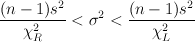
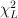
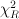

Statistics > Confidence Intervals > 1-Population Variance
This utility computes the confidence intervals for a population variance
in one population. The confidnece
intervals are calculated using the following formula:
 where
n = sample size
s = sample standard deviation
&sigma2 = variance
 = inverse cumulative
probability of the Chi-square distribution at
α/2.
 = inverse cumulative
probability of the Chi-square distribution at
1 - α/2.
To use the utility, select Statistics > Confidence Intervals >
1-Population Variance.
- You can provide sample data in a column of the Datasheet or provide
summary data. To provde sample data in a column, select
the Samples in column: radio button, and select the column
name in the given drop-down menu.
- If individual sample data is not available, you can provide summary
information of the sample data. In this case, select the Summarized
sample data radio button. Enter sample size and either sample variance
or sample standard deviation in the provided text boxes.
- Enter the confidence level (between 0 and 1) in the
Confidence level: text box.
- Click OK to compute the confidence interval. The results
will be shown in the log window.
The sample size, variance, and standard deviation are displayed,
along with the resulting confidence interval for variance and
standard deviation.
Here is an example:
Confidence Interval - One population variance: confidence level = 0.95
Input: Summary data
| N | Variance | Stdev | 95.00%CI Variance | 95.00%CI Stdev |
| 100 | 10.000 | 3.162 | (7.7090, 13.4949) | (2.7765, 3.6735) |